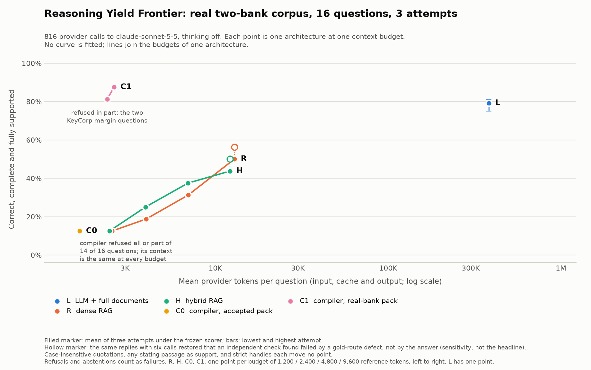
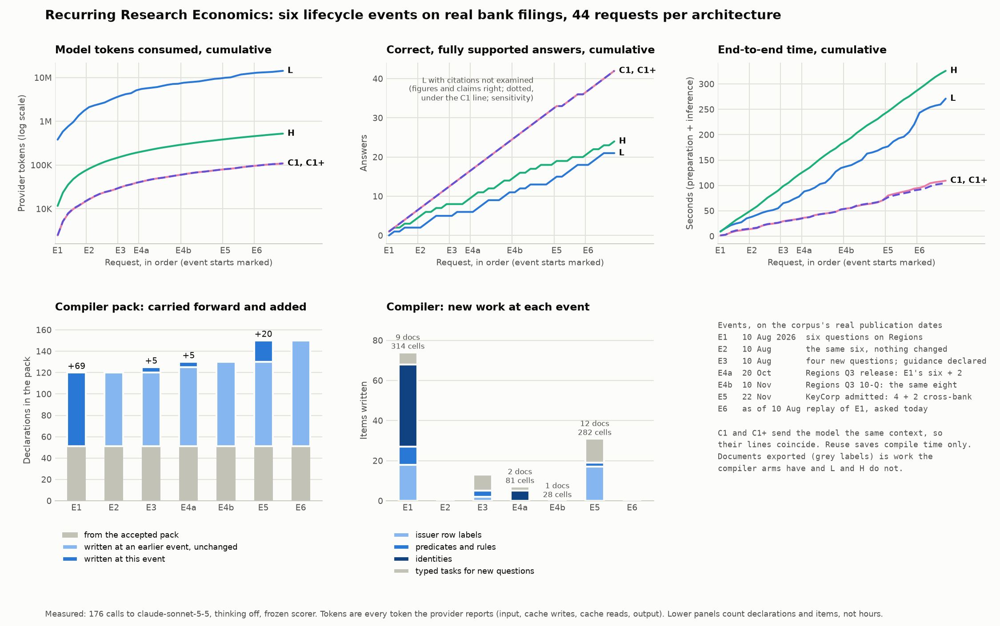
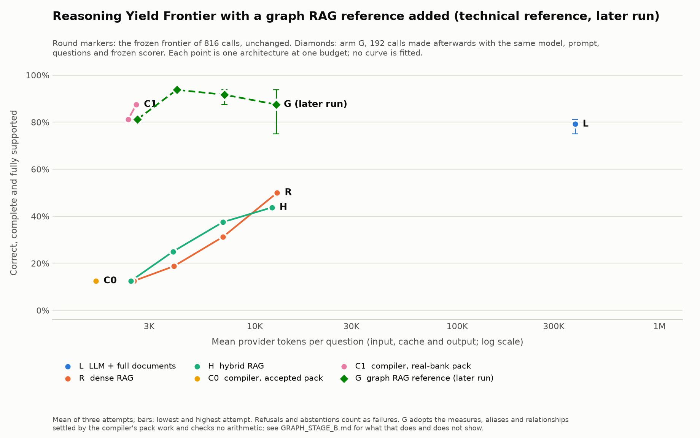

Context Compiler · Real-bank research · November 2026
Whole documents used 148 times as many tokens as cc.
On 16 questions about Regions Financial and KeyCorp, cc averaged 2,595 provider tokens per question. Giving the model the full documents took 382,919. Across three attempts per question, cc produced 42 fully supported answers and whole documents produced 38. The small sample leaves the accuracy difference uncertain.
Answer quality and token use
Claude Sonnet 5.5 answered questions about margins, deposit costs, conflicting sources and guidance using 41 public filings and earnings documents, from the fourth quarter of 2025 through the third quarter of 2026. Credit required correct figures, complete answers and citations to the passages that supported them. One question called for an abstention.

| System | Fully supported | Tokens per question | Supported answers per million tokens |
|---|---|---|---|
| cc, bank-adapted rules | 42/48 | 2,595 | 337 |
| Whole documents | 38/48 | 382,919 | 2.1 |
| Dense retrieval | 24/48 | 12,890 | 39 |
| Hybrid retrieval | 21/48 | 12,154 | 36 |
| cc, original rules | 6/48 | 1,647 | 76 |
The table uses the 2,400-token limit for cc and the 9,600-token limit for retrieval. Dense and hybrid retrieval were still improving at the largest limit tested. Review found valid citations missing from the answer key. Crediting them lifts the retrieval scores to 56% and 50%, respectively, shown by the hollow markers.
The original compiler rules assumed annualization by a factor of four. These banks used day counts. Adapting the rules allowed cc to verify more figures. It still refused two KeyCorp margin questions because it could not verify the denominator.
Recurring research economics
A separate run followed the same research as questions repeated, new filings arrived, a second bank joined and earlier questions were replayed. cc and whole documents each got the figures and claims right on 42 of 44 requests. Checking the citations left cc with 42 fully supported answers and whole documents with 21.

| System | Fully supported | Correct figures and claims | Provider tokens |
|---|---|---|---|
| cc | 42 | 42 | 109,190 |
| cc with artifact reuse | 42 | 42 | 109,262 |
| Hybrid retrieval | 24 | 26 | 524,712 |
| Whole documents | 21 | 42 | 14,286,646 |
The second bank reused the existing rules and checks but needed its own source mappings. It took 20 new declarations, compared with 69 for the first bank. Each new quarter needed five additional day-count checks.
All seven cache hits matched a fresh compilation. Reuse saved 0.14 seconds of compilation against 103 seconds of model time. Replaying the original six questions reproduced every context byte for byte when the original rules and evidence snapshot were pinned.
cc versus a well-mapped graph
We later ran a typed evidence graph on the same questions, model and scorer. It had its own retrieval, authority rules and source citations. It inherited the bank-specific meanings and relationships mapped for cc.

| Reading | Graph RAG | cc |
|---|---|---|
| Frozen score, all 16 questions | 45/48 (93.8%) | 42/48 (87.5%) |
| Sensitivity, excluding the KeyCorp margin question | 42/45 | 42/45 |
| Provider tokens per question, full run | 4,112 | 2,595 |
| Supported answers per million tokens, full run | 228 | 337 |
The frozen result stands. Graph RAG answered three more attempts correctly. All three were the same question (Q06) about the basis of KeyCorp’s reported net interest margin.
The independent check found the graph’s replies relied on an inherited measure label that encoded the fair-value distinction. The graph had supplied no filing passage explaining it. Excluding that question and its three attempts gives the separate 42/45 sensitivity above.
What this does not show
Semantic inheritance
The graph started with measures, relationships and corrections developed for cc. The work a graph builder would need to discover those definitions independently was never timed.
Engineering cost
cc needed mappings for 24 exported documents, 705 figures traced to source lines and a typed task for each question. The experiment counted that work in items. It did not measure human hours or establish a saving in setup or maintenance.
Validation
cc checked declared accounting identities. The graph reference did not perform arithmetic checks. This run included no deliberately corrupted figures, so it cannot establish how either system performs after an ingestion error.
Scale and independence
Two banks, 16 questions and one model. The same author prepared the questions, answer key and adapted rules with the filings in view. The graph was built later with the questions known. One question accounts for 6.25 percentage points.
How it was measured
The pilot, frontier, lifecycle and later graph run comprised 1,252 recorded calls. Each run used a manifest fixed before execution and one attempt per slot. Provider totals include input, cache writes, cache reads and output. A separate reviewer checked the arithmetic, reran the scorer and examined disputed answers. Alternative readings are reported separately from the frozen scores.
Reckoning Machines conducted this research using public SEC filings. Neither bank participated.
Return to Context Compiler